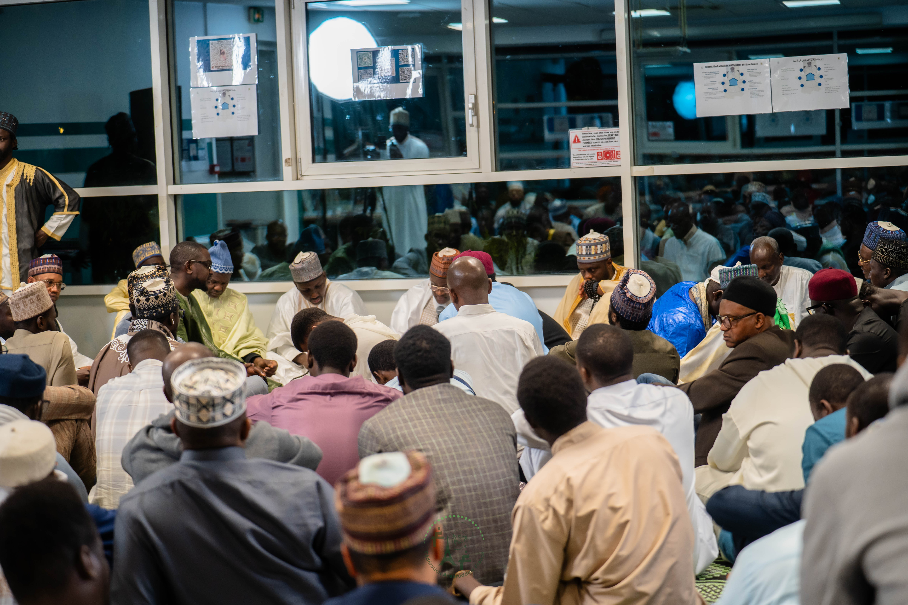
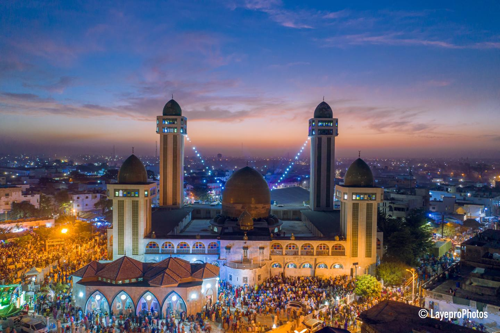

Bienvenue à la Fédération Ansaroudine de France
Une communauté unie dans la foi tijani et le service de l'humanité
Notre Fédération
Une organisation dédiée à la promotion des valeurs tijani
Spiritualité
Nous cultivons une spiritualité profonde basée sur la voie tijani et les enseignements du Prophète (SAW).
Communauté
Une communauté soudée qui se soutient mutuellement dans la foi et dans les épreuves de la vie.
Bienfaisance
Nous nous engageons dans des actions caritatives et humanitaires pour aider les plus démunis.
ACS - Association Connaissance et Savoir
Un établissement culturel et cultuel pour la communauté tijani
L'Association Connaissance et Savoir a pour objet d'acquérir et d'assurer la gestion d'un établissement à caractère culturel et cultuel. Ce lieu permettra les rencontres entre tous les disciples de Cheikh Ibrahim NIASS et la réalisation des activités de la fédération ANSAROUDINE dans la région Parisienne.
Vente de livres
Nous proposons une large gamme d'ouvrages religieux, notamment les œuvres de Cheikh Ibrahim NIASS traduites en français.
Éducation et culture
Cours d'arabe, alphabétisation, accompagnement scolaire et activités éducatives pour tous.
Manifestations culturelles
Conférences, exégèse des œuvres de Cheikh Ibrahim NIASS, Gamou, Zikrs et apprentissage du Coran.
Actions sociales
Accompagnement des familles en difficulté et aide aux talibés en quête de savoir spirituel.
Projet Keur Baye
Notre zawiya en France pour toutes les activités islamiques
Un projet ambitieux pour notre communauté
Le Projet Keur Baye vise à acquérir notre propre zawiya en France, un espace dédié où nous pourrons organiser toutes nos activités islamiques dans un cadre approprié et conforme à nos traditions.
Objectifs du projet :
- Créer un lieu de culte et de rassemblement pour la communauté tijani
- Organiser les manifestations religieuses (Gamou, Zikrs)
- Dispenser l'enseignement coranique et spirituel
- Accueillir dignement les membres de la famille de Cheikh Ibrahim NIASS
- Développer les activités éducatives et culturelles
- Renforcer les liens entre les talibés de France

Keur Baye
Notre future zawiya
Où se déroulent les séances de Hadra
Rejoignez-nous pour nos rassemblements spirituels
Adresse de nos séances
13 rue des Terres au Curé
Paris 13ème arrondissement
France
Paris 13ème
13 rue des Terres au Curé
À propos de nous
La Fédération Ansaroudine de France est une organisation religieuse tijani qui œuvre pour la promotion des valeurs islamiques authentiques et le service de la communauté. Fondée sur les principes de fraternité, d'entraide et de spiritualité, notre fédération rassemble des croyants engagés dans la voie tijani.
Nous nous efforçons de créer un environnement où chaque membre peut grandir spirituellement tout en contribuant positivement à la société française. Nos actions caritatives et sociales témoignent de notre engagement envers les valeurs d'humanité et de compassion.